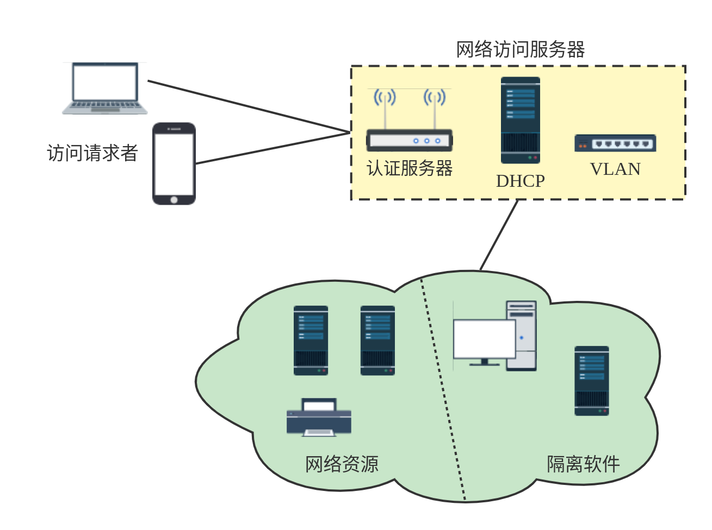
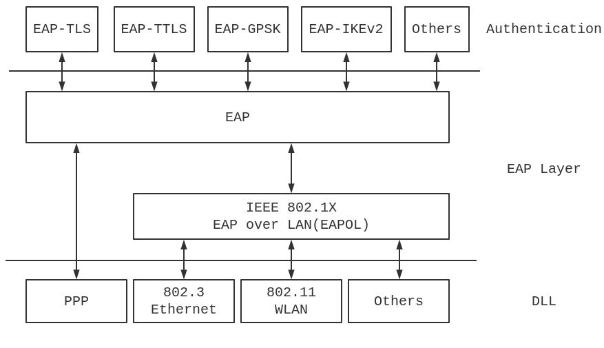
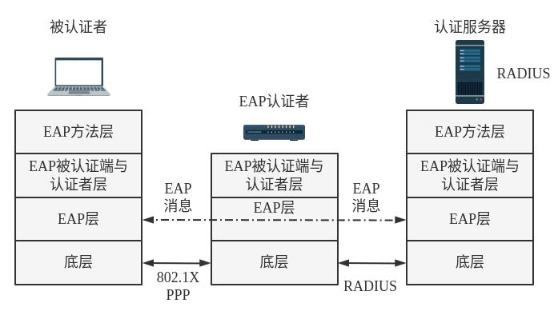
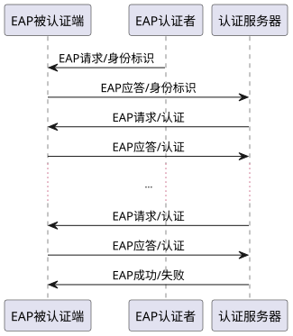
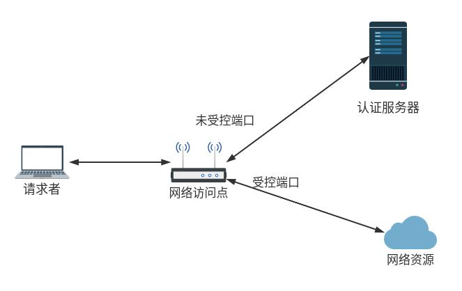
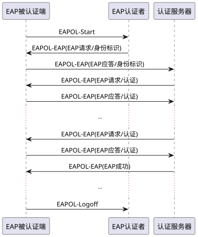

# 网络访问控制 —— 组成
为了保证网络的安全性，对访问一个网络的实体进行控制显然是必须的。这个控制一方面包括了用户认证，另一方面也包括了对用户的控制 —— 谁能访问哪些东西，谁能进行哪些操作。
而网络访问控制 (Network Access Control, NAC) 就是一个概括性的概念，包括了对用户的认证、访问权限的控制以及终端安全性的检查等诸多方面。
一个 NAC 系统包括了三个组成部分：
- 访问请求者（Access Requestor, AR）：一个尝试访问网络的节点，包括了 PC、服务器、打印机等等各种可以接入网络的设备。
- 策略服务器：策略服务器依赖后端系统的安全软件、用户目录等信息用来确定 AR 的状态并设置 AR 的访问权限。
- 网络访问服务器（Network Access Server, NAS）：NAS 一般有一套自己的认证服务，对于远程设备访问，NAS 可以起到一个访问控制点的作用。NAS 也叫做介质网关或者远程访问服务器（Remote Access Server）。

为了实现 NAC 的目的，我们需要一些网络访问的强制措施。下面这些是一些常见的控制措施。
- IEEE 802.1X
- VLAN
- 防火墙
- DHCP 管理
# 可扩展认证协议
RFC 3748 定义了可扩展认证协议（Extensible Authentication Protocol, EAP)，这是一个网络访问和认证的框架。EAP 提供了一系列支持的协议，可以用于各种网络环境。
# 结构

说 EAP 是可扩展认证协议，也是因为 EAP 本身是支持了多种的认证方式。图中 EAP 的认证方式包括了下面的几种：
- EAP-TLS：RFC 5216 定义了封装在 EAP 信息中的 TLS 协议。客户端和服务器使用证书互相认证，客户端使用服务器公钥加密一个随机数作为预备主密钥（pre-master）发送给服务器，双方也通过这个来生成共享的安全密钥。
- EAP-TTLS：RFc 5281 中定义了这个协议。服务器首先使用证书向客户端验证自己身份。双方的连接使用安全密钥进行建立（隧道），并继续认证客户端的身份。
- EAP-GPSK：RFC 5433 定义了该协议。这个协议使用预共享密钥 PSK 进行认证和会话密钥的生成。这个协议可以不使用公钥密码的组件，因此十分高效，但是需要通过合适的手段预先共享密钥。
- EAP-IKEv2：RFC 5106 定义了在 IKEv2 基础上的 EAP 协议。这个协议支持相互认证和建立会话密钥。
# EAP 交换协议
RFC 3748 规定 EAP 信息交换的目的是成功认证，或者说 EAP 信息进行交换也就是成功实现了认证，认证者允许被认证者访问，被认证者也同意进行访问。EAP 的常见布局包括了三个部分：EAP 被认证端，EAP 认证者和认证服务器。
常见的一个架构被叫做 EAP 透传模式，也就是认证服务器作为一个后端服务器，为 EAP 认证者提供认证服务。EAP 认证者向认证服务器请求认证服务并决定被认证端能否被授权访问。一个常见的使用远程用户拨号认证服务器（Remote Authentication Dial In User Service, RADIUS）系统的架构如下：

一个 EAP 信息包括了四个部分，即编码域，标识符域，长度域和数据域。
- 编码域：EAP 信息类型
- 1：请求
- 2：应答
- 3：成功
- 4：失败
- 标识符域：匹配请求与应答
- 长度域：EAP 信息长度
- 数据域：包含了认证信息，只在请求与应答数据包中存在

EAP 交换的例子如上图所示。EAP 认证需求产生之后，认证者向被认证者发送 EAP 身份标识的请求。接下来被认证端和认证服务器之间持续进行一连串的请求与应答，直到 EAP 得到成功或者失败的信息。
# IEEE 802.1X
IEEE 802.1X 给出了在局域网中进行访问控制的方案。
802.1X 给出了未受控端口和受控端口的概念。在通过认证协议之前，仅有未受控端口允许被认证者的数据通过，被认证者只能通过网络访问点和认证服务器进行通信。受控端口在请求者被授权允许进行交换时才能够在网络中交换数据单元。

在 IEEE 802.1X 中定义了 EAPOL（局域网上的可扩展认证协议），这是一个在网络层的协议。EAPOL 允许请求者和认证者相互通信与 EAP 包交换。
常见的 EAPOL 帧类型如下：
- EAPOL-EAP：包含了封装的 EAP 包
- EAPOL-Start：请求者发送这个数据包之后，等待认证者发来的挑战
- EAPOL-Logoff：完成网络使用之后，返回未被授权的端口状态
- EAPOL-Key：交换密码系统的密钥信息
在请求者连接到局域网之后，请求者使用 802.1X 多播群组地址发送 EAPOL-Start 包，判断网络中是否存在认证者。若存在则通知认证者请求已经准备好。在一些情况下硬件会实现这种操作。
接下来双方会互相传输 EAPOL-EAP 数据帧。在允许请求者介入网络之后，认证者使用 EAP-key 向请求者发送密钥。当请求者希望和网络断开连接时，请求者会发送 EAP-Logoff 数据包。
一个使用 EAPOL 的例子如下：

# 参考资料
[1] 网络安全基础 —— 应用与标准（第六版），William Stallings.
[2] 密码编码学与网络安全 —— 原理与实践（第八版），William Stallings.